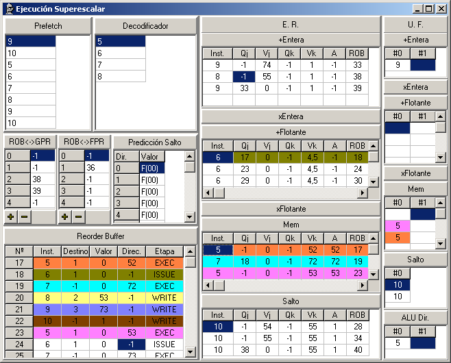

Simulation window
This window shows the basic structure of the superscalar processor.

Components
Prefetch: Prefetch unit.
Decoder: Decoder Unit
ROB<->GPR: This grid shows the ROB entry where a General Purpose Register is being processed (or -1 if the register is not associated to any ROB entry). Only a subset of elements is showed. You can hide or show elements by using and . The selection is making by using a comma-separated list of numbers or intervals (for example: 2,10-15,20).
ROB<->FPR: This grid shows the ROB entry where a Floating Point Register is being processed (or -1 if the register is not associated to any ROB entry). Only a subset of elements is showed. You can hide or show elements by using
 and . The selection is making by using a comma-separated list of numbers or intervals (for example: 2,10-15,20).
and . The selection is making by using a comma-separated list of numbers or intervals (for example: 2,10-15,20). Branch Prediction: 2-bit Branch Prediction Table. Any entry p is allowed to take T or F as its value. A F value implies that any branch instruction with identifier i (i mod p = 0) will be not taken; the branch is taken if value is T. A binary value that represents the current state of the entry is also showed in parentheses.
ROB: Reorder Buffer.
RE: Reservation Stations.
FU: Functional Units. The name of the FU is showed on top. There are as many columns as FU declared of this type. Each column represents a FU. The rows represents the FU pipeline.
Adjust Component Height and Width
Click on the component borders and drag to change the height and width of the component. To hide a FU or ER make a double-click on its name. To show the unit make double-click again.
Colouring instructions
Double-click on any ROB entry marks an instruction. Then you can select a color for this ROB entry and the corresponding ER and UF entries will be coloured too.